Die Entwicklung eines autonomen Roboters, angetrieben durch KI und modernste Hardware-Architektur.
Spezifikationen ansehenFahre mit der Maus über eine Karte, um die Hardware-Komponente zu sehen.
NVIDIA Jetson Orin NX
Bereit für komplexe KI-Modelle und Computer Vision in Echtzeit.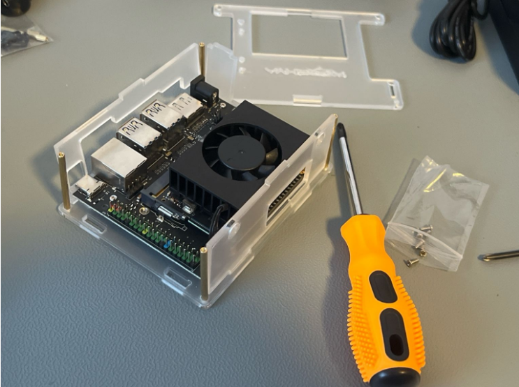
Mecanum-Räder
Ermöglicht omnidirektionale Bewegungen auf engstem Raum.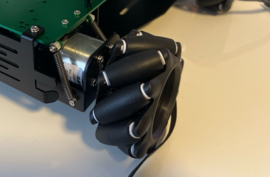
Aluminium Basis
Robuste und flexible Struktur für Hardware-Erweiterungen.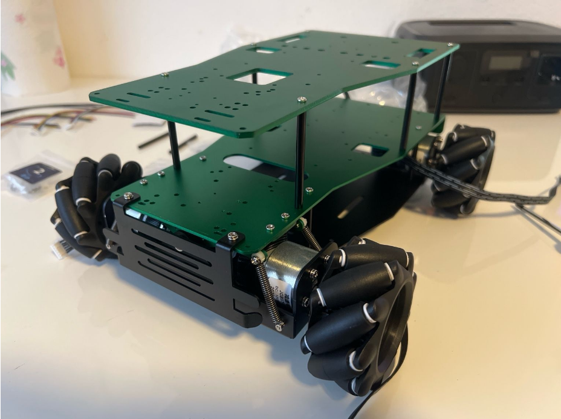
LIDAR & Kameras
Präzise Umgebungswahrnehmung für Navigation und Objekt- und Personenerkennung.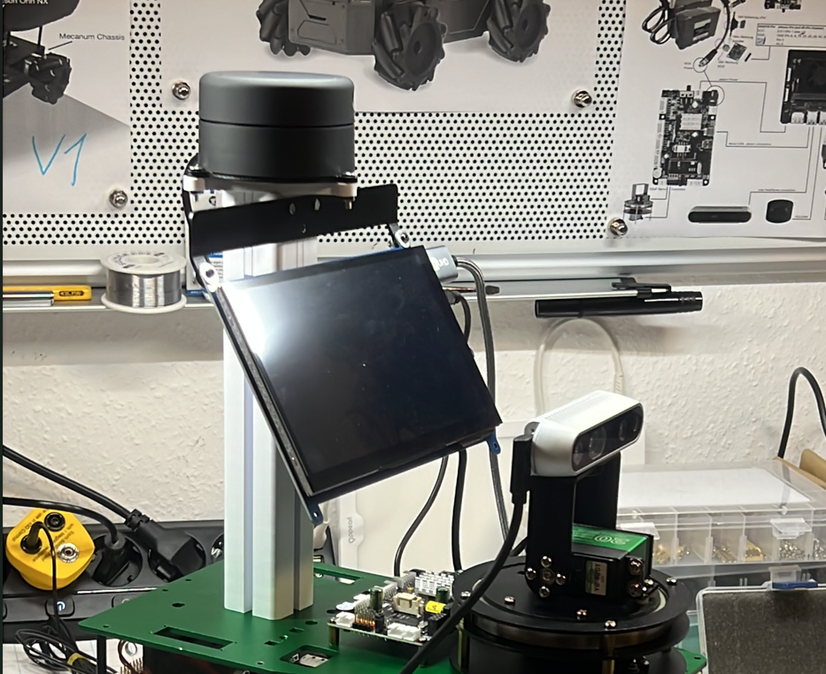
ROS-V3
Steuereinheit um die Räder einzeln und unabhängig voneinander zu steuern.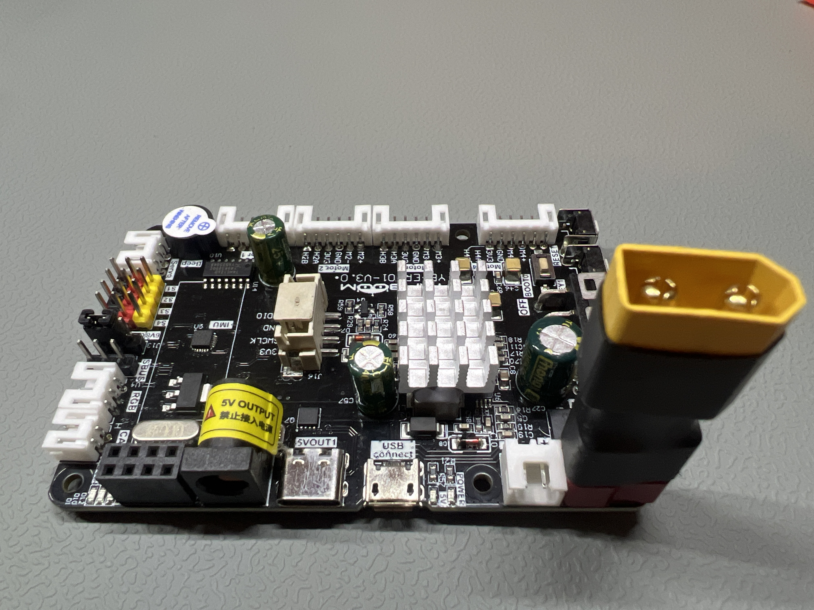
Li-Ion Akkus
Parallel geschaltete 12V Akkus für eine lange Laufzeit.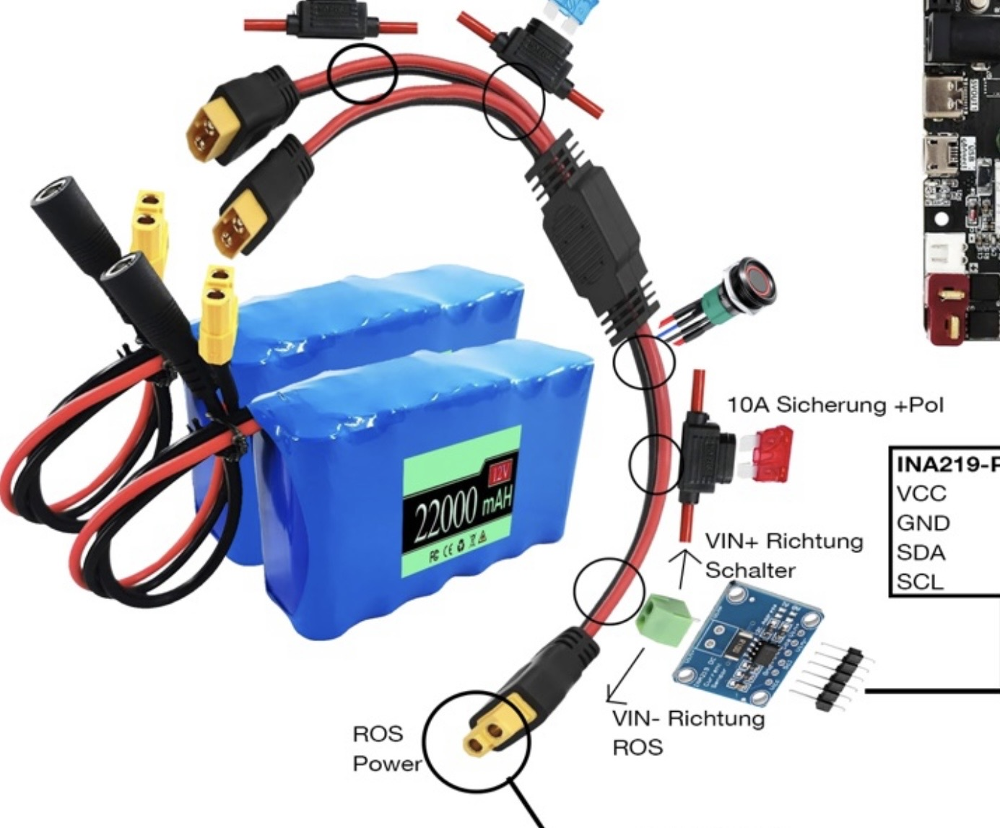
Von der Idee zum autonomen System: Die Evolution von Nova.
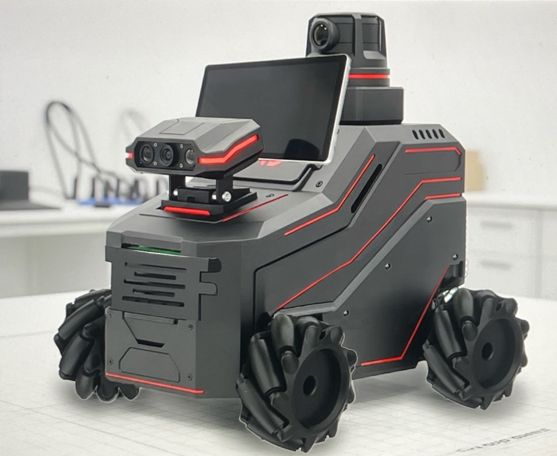
Die erste Vorlage für das optische Design.
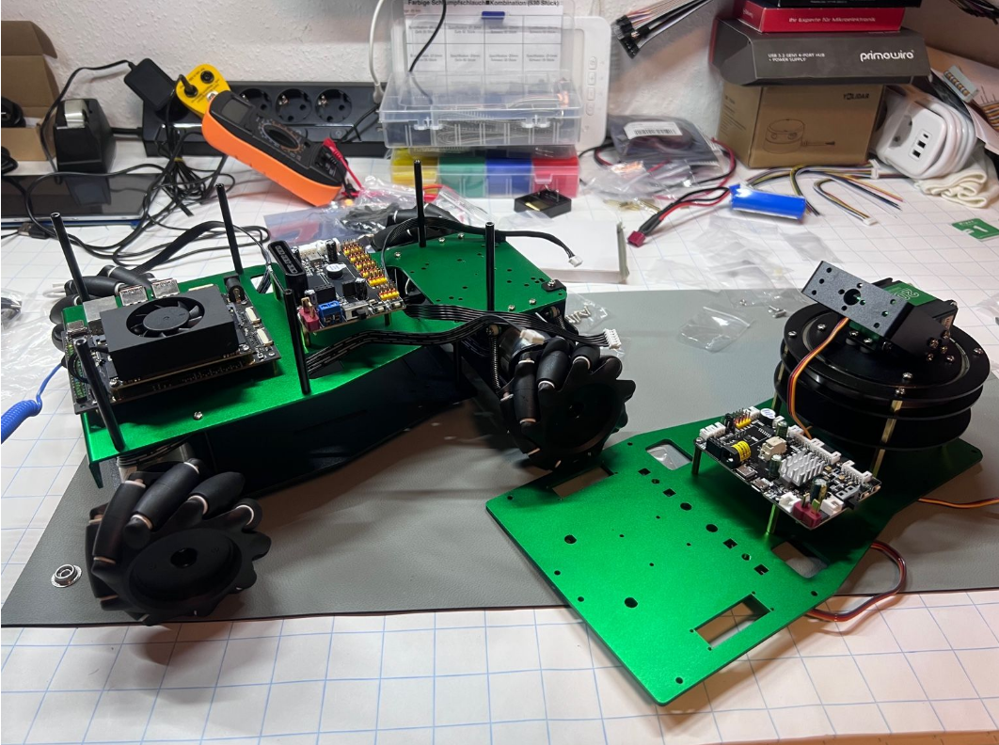
Der Aufbau und die einzelnen Komponenten.
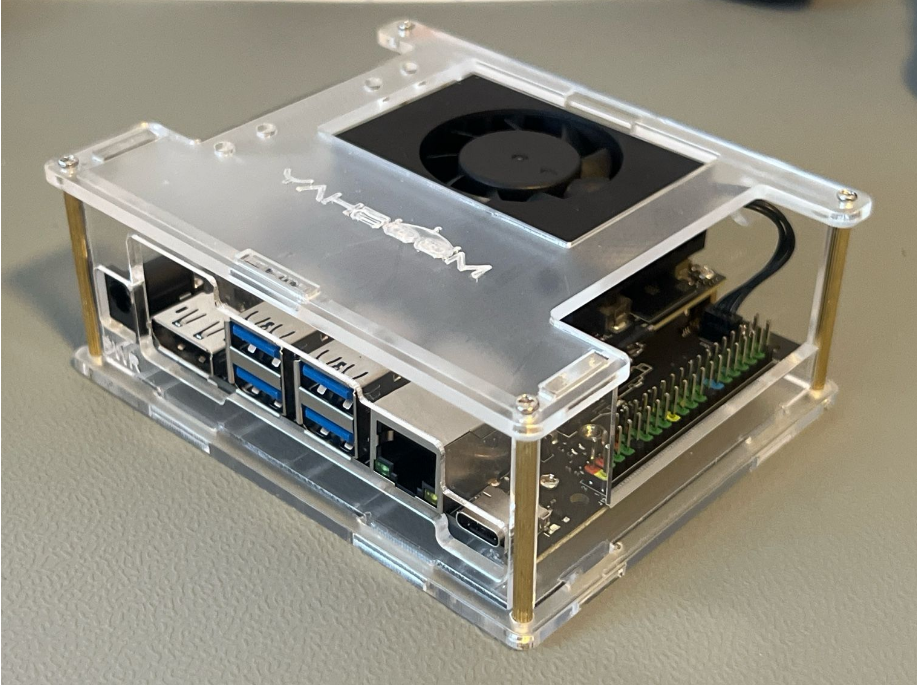
NVIDIA Jetson Orin NX 16 GB für maximale Autonomität.
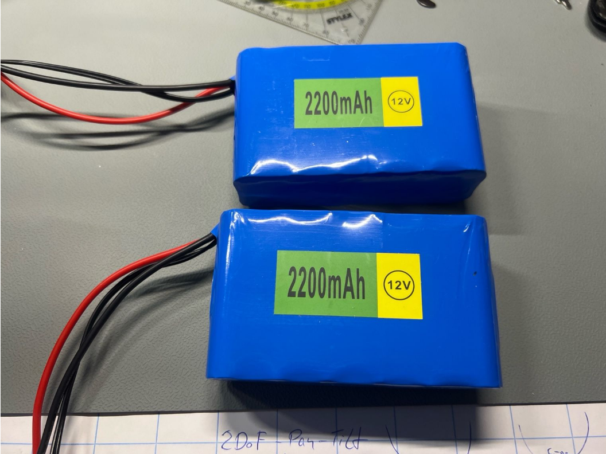
Parallel geschaltete 12V Li-Ion Akkus für maximale Laufzeit.
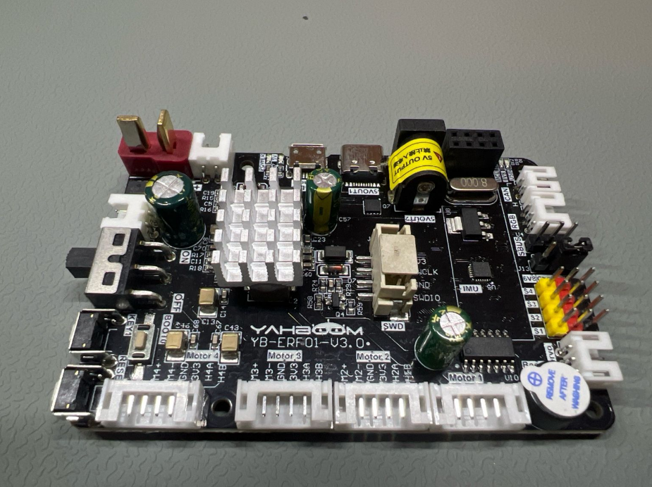
ROS-V3 ermöglicht die präzise Einzelradsteuerung.
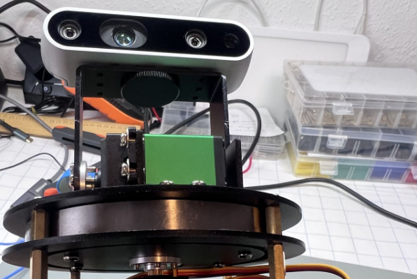
Kombination aus LIDAR & Intel Realsense für 3D-Räumlidarkartierung.
Systemarchitektur, Kinematik & Steuerungs-Software
Lies die vollständige technische Dokumentation zu Projekt Nova direkt hier auf der Seite. Das Dokument enthält tiefgehende Einblicke in die mathematische Modellierung der Mecanum-Kinematik, die Integration des NVIDIA Jetson Orin NX sowie die ROS-V3-Softwarestruktur.
Die Dokumentation enthält zahlreiche hochauflösende Grafiken und Fotos zur anschaulichen Visualisierung der einzelnen Integrationsschritte.